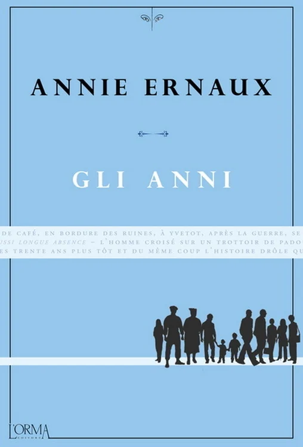
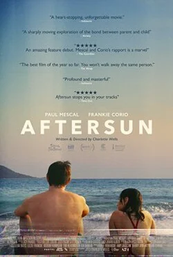

A collection, and the threads between it
Paolo’s
bookcase.
Some works become part of the room.
A personal collection of film, reading, art and sound, arranged around the ideas that keep returning.
32 books34 films13 artists


Memory, atmosphere, a little irreverence.
The collection / six shelves
30 works on display
Beyond the familiarLeave a little
Leave a little
room for discovery.
A few paths outward from the collection. Each suggestion follows a particular thread, with a reason to begin there. Keep anything that interests you for later.
The whole collection
/ 79 works
79 works
Books and films come from your five-star Goodreads and Letterboxd exports of October 2026. Duplicate editions are shown once. Artworks and albums represent artists you named as favorites; they are examples of their work. The shelves are a curatorial reading of your taste, and the suggestions remain separate from your favorites.